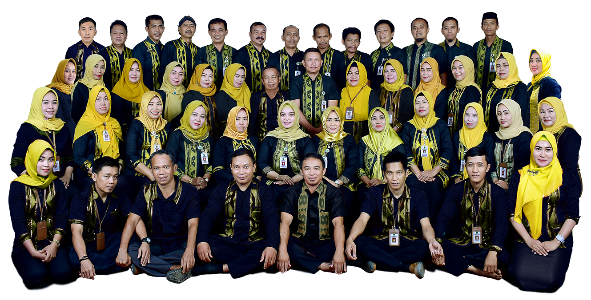
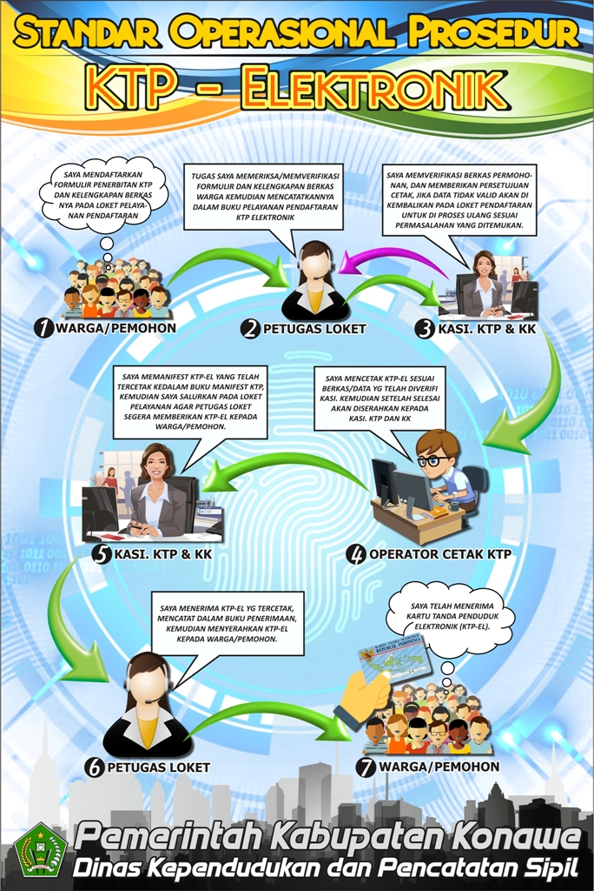
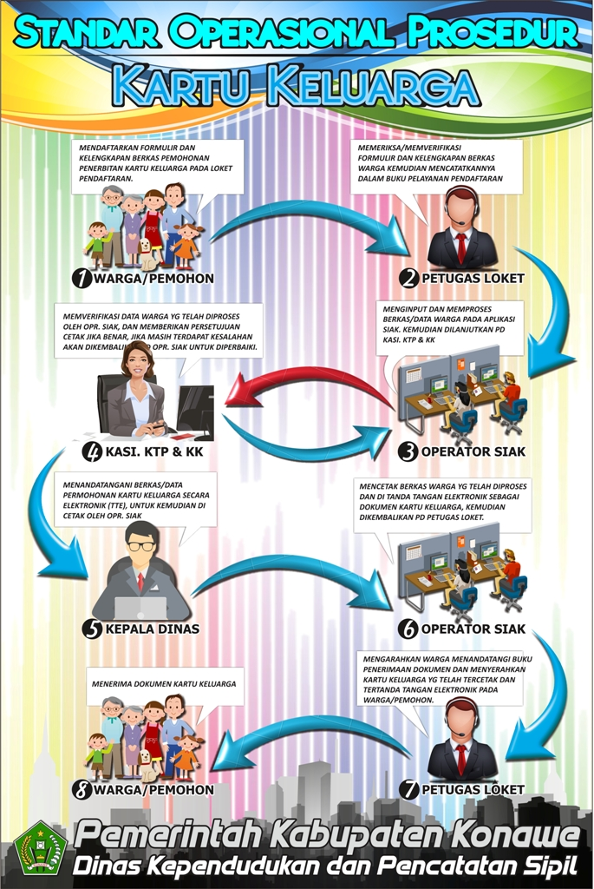
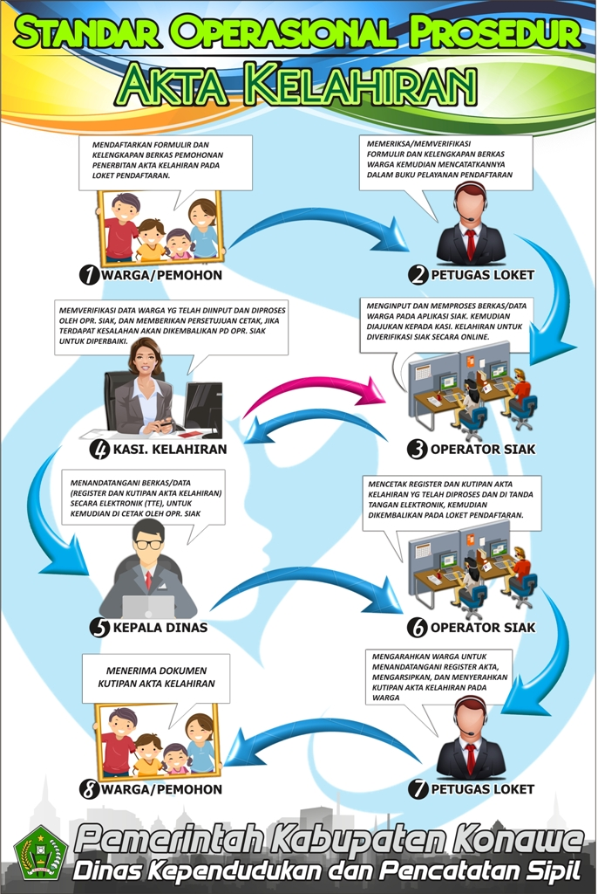
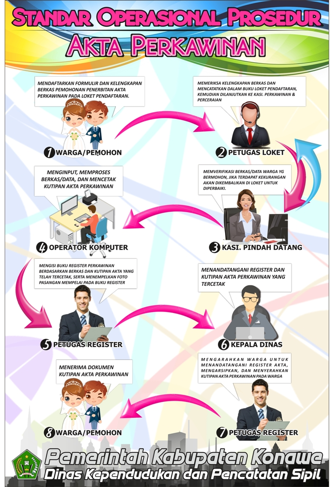
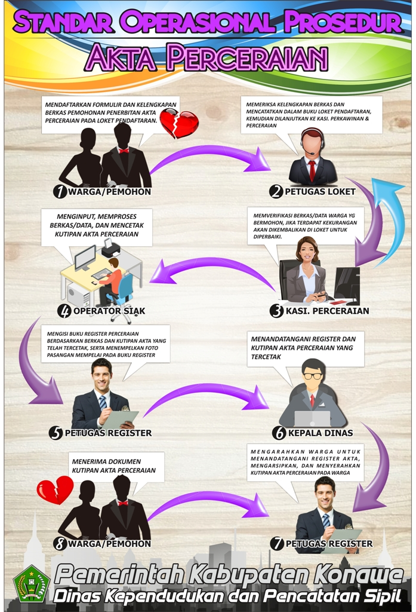

DINAS KEPENDUDUKAN DAN PENCATATAN SIPIL KABUPATEN KONAWE PROV. SULAWESI TENGGARA

Karyawan dan Karyawati Dinas Kependudukan dan Pencatatan Sipil Kab.Konawe
Pengertian SOP
Standar Operasional Prosedur (SOP) adalah dokumen yang berkaitan dengan prosedur yang dilakukan secara kronologis untuk menyelesaikan suatu pekerjaan yang bertujuan untuk memperoleh hasil kerja yang paling efektif dari para pekerja dengan biaya yang serendah-rendahnya. SOP biasanya terdiri dari manfaat, kapan dibuat atau direvisi, metode penulisan prosedur, serta dilengkapi oleh bagan flowchart di bagian akhir.
Setiap Instansi maupun perusahaan bagaimanapun bentuk dan apapun jenisnya, membutuhkan sebuah panduan untuk menjalankan tugas dan fungsi setiap elemen atau unit perusahaan. Standar Operasional Prosedur (SOP) adalah sistem yang disusun untuk memudahkan, merapihkan dan menertibkan pekerjaan. Sistem ini berisi urutan proses melakukan pekerjaan dari awal sampai akhir.
Tujuan dan Fungsi SOP
Tujuan pembuatan SOP adalah untuk menjelaskan perincian atau standar yang tetap mengenai aktivitas pekerjaan yang berulang-ulang yang diselenggarakan dalam suatu organisasi. SOP yang baik adalah SOP yang mampu menjadikan arus kerja yang lebih baik, menjadi panduan untuk karyawan baru, penghematan biaya, memudahkan pengawasan, serta mengakibatkan koordinasi yang baik antara bagian-bagian yang berlainan dalam perusahaan maupun instansi
KTP-ELEKTRONIK
Kartu Tanda Penduduk (KTP) adalah identitas resmi seorang penduduk sebagai bukti diri yang diterbitkan oleh instansi pelaksana yang berlaku di seluruh wilayah Negara Kesatuan Republik Indonesia. Kartu ini wajib dimiliki Warga Negara Indonesia (WNI) dan Warga Negara Asing (WNA) yang memiliki Izin Tinggal Tetap (ITAP) yang sudah berumur 17 tahun atau sudah pernah kawin atau telah kawin. Anak dari orang tua WNA yang memiliki ITAP dan sudah berumur 17 tahun juga wajib memilki KTP. KTP bagi WNI berlaku berlaku seumur hidup selama tidak mengalami perubahan elemen data. KTP bagi WNA berlaku sesuai dengan masa Izin Tinggal Tetap. Sejak tahun 2011, KTP non elektronik telah digantikan dengan KTP elektronik.
KTP-el sangat perlu untuk dapat menciptakan sistem administrasi kependudukan yang rapi dan teratur dalam rangka mempermudah pemberian pelayanan publik oleh pemerintah kepada seluruh masyarakat. Pemanfaatan KTP-el diharapkan dapat berjalan lancar karena memiliki fungsi dan kegunaan yang sangat membantu pemerintah dan masyarakat yang bersangkutan dalam hal pemberian dan pemanfaatan pelayanan publik.
Untuk menciptakan pelayanan pelaksanaan pendaftaran pendudukan dalam hal ini penerbitan KTP el yang bersih, rapi, dan teratur. Masyarakat dapat melihat Standar Operasional Prosedur penerbitan KTP el di bawah ini :

Bagan Alur Pendaftaran KTP-ELEKTRONIK
KARTU KELUARGA
Kartu Keluarga adalah Kartu Identitas Keluarga yang memuat data tentang susunan, hubungan dan jumlah anggota keluarga. Kartu Keluarga wajib dimiliki oleh setiap keluarga. Kartu ini berisi data lengkap tentang identitas Kepala Keluarga dan anggota keluarganya.
Setiap terjadi perubahan karena Mutasi Data dan Mutasi Biodata, wajib dilaporkan kepada Lurah dan akan diterbitkan Kartu Keluarga (KK) yang baru. Pendatang baru yang belum mendaftarkan diri atau belum berstatus penduduk setempat, nama dan identitasnya tidak boleh dicantumkan dalan Kartu Keluarga.
Untuk menciptakan pelayanan pelaksanaan pendaftaran pendudukan dalam hal ini penerbitan Kartu Keluarga yang bersih, rapi, dan teratur. Masyarakat dapat melihat Standar Operasional Prosedur penerbitan Kartu Keluarga di bawah ini :

Bagan Alur pendaftran KARTU KELUARGA
AKTA KELAHIRAN
Akta kelahiran atau bisa disebut dengan akta lahir adalah tanda bukti berisi pernyataan yang teramat sangat penting dan diperlukan guna mengatur dan menyimpan bahan keterangan tentang kelahiran seorang bayi dalam bentuk selembar kertas yang sudah dicetak. Setiap kalinya, istilah seperti ini dapat mengacu kepada setiap catatan resmi berlandaskan undang-undang yang resmi menetapkan hal-hal mengenai kelahiran seorang anak dan juga berlaku pada salinan lembaran pencatatan akta lahir yang dapat dipertanggungjawabkan keasliannya.
Untuk menciptakan pelayanan pelaksanaan pendaftaran pendudukan dalam hal ini penerbitan Akta Kelahiran yang bersih, rapi, dan teratur. Masyarakat dapat melihat Standar Operasional Prosedur penerbitan Akta Kelahiran di bawah ini :

Bagan Alur Pendaftaran AKTA KELAHIRAN
AKTA PERKAWINAN
Pernikahan adalah upacara pengikatan janji nikah yang dirayakan atau dilaksanakan oleh dua orang dengan maksud meresmikan ikatan perkawinan secara norma agama, norma hukum, dan norma sosial. Upacara pernikahan memiliki banyak ragam dan variasi menurut tradisi suku bangsa, agama, budaya, maupun kelas sosial. Penggunaan adat atau aturan tertentu kadang-kadang berkaitan dengan aturan atau hukum agama tertentu.
Pengesahan secara hukum suatu pernikahan biasanya terjadi pada saat dokumen tertulis yang mencatatkan pernikahan ditanda-tangani. Upacara pernikahan sendiri biasanya merupakan acara yang dilangsungkan untuk melakukan upacara berdasarkan adat-istiadat yang berlaku, dan kesempatan untuk merayakannya bersama teman dan keluarga. Wanita dan pria yang sedang melangsungkan pernikahan dinamakan pengantin, dan setelah upacaranya selesai kemudian mereka dinamakan suami dan istri dalam ikatan perkawinan.
Untuk menciptakan pelayanan pelaksanaan pendaftaran pendudukan dalam hal ini penerbitan Akta Perkawinan Non Muslim yang bersih, rapi, dan teratur. Masyarakat dapat melihat Standar Operasional Prosedur penerbitan Akta Perkawinan di bawah ini :

Bagan Alur Pendaftaran AKTA PERKAWINAN
AKTA PERCERAIAN
Perceraian adalah berakhirnya suatu pernikahan. Saat kedua pasangan tak ingin melanjutkan kehidupan pernikahannya, mereka bisa meminta pemerintah untuk dipisahkan. Selama perceraian, pasangan tersebut harus memutuskan bagaimana membagi harta mereka yang diperoleh selama pernikahan seperti rumah, mobil, perabotan atau kontrak), dan bagaimana mereka menerima biaya dan kewajiban merawat anak-anak mereka. Banyak negara yang memiliki hukum dan aturan tentang perceraian, dan pasangan itu dapat menyelesaikannya ke pengadilan.
Untuk menciptakan pelayanan pelaksanaan pendaftaran pendudukan dalam hal ini penerbitan Akta Perceraian Non Muslim yang bersih, rapi, dan teratur. Masyarakat dapat melihat Standar Operasional Prosedur penerbitan Akta Perceraian di bawah ini :

Bagan Alur Pendaftaran AKTA PERCERAIAN
AKTA KEMATIAN
Akta kematian adalah suatu akta yang dibuat dan diterbitkan oleh Dinas Kependudukan dan Pencatatan Sipil yang membuktikan secara pasti tentang kematian seseorang. Kematian merupakan salah satu peristiwa penting yang dialami oleh setiap orang, yang harus dicatat dan dikukuhkan oleh Negara dalam bentuk Akta Kematian.
Untuk menciptakan pelayanan pelaksanaan pendaftaran pendudukan dalam hal ini penerbitan Akta Kematian. Masyarakat dapat melihat Standar Operasional Prosedur penerbitan Akta Kematian di bawah ini :